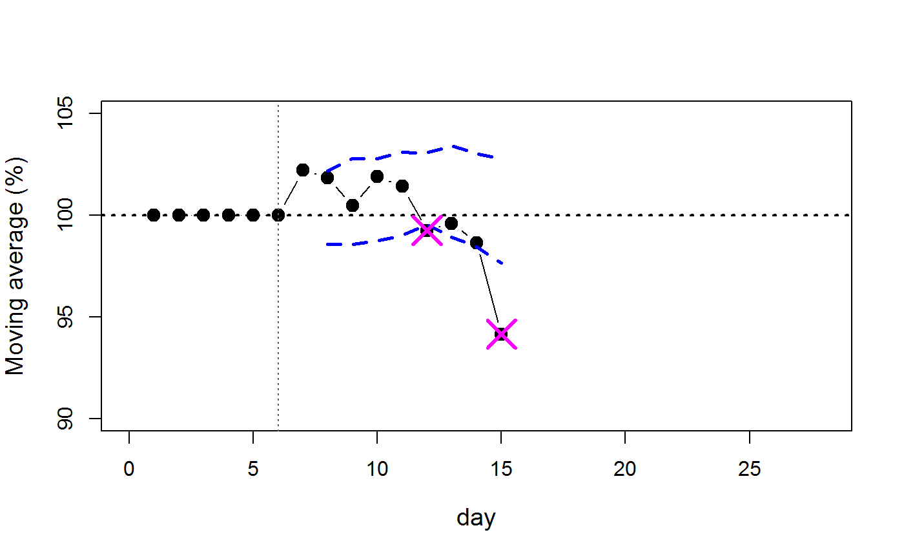

In our paper Body weight course as a reliable marker for humane endpoint determination in rat models with intracranial tumor by Helgers and Talbot et al (2019) we describe an algorithm that is capable of detecting endpoints in different experimental data sets with a detection rate of 97 %. As the algorithm is largely based on the detection of variance deviation, its major drawback certainly lies within the number of false alarms. However, as a tool for the unexperienced researcher working with laboratory animals it is a valuable addition to their daily work. Empirical endpoint assessment requires not only a high level of training and expertise but it is in its nature biased by human conjecture.
The presented algorithm offers objective assistance in data evaluation while leaving the option for using more traditional ways of evaluation. Another finding was the high correlation of clinical scoring with the mean absolute deviation (MAD) of the body weight data. By constraining body weight variance space by MAD, almost similar results as with empirical clinical scoring were achieved.
The endpointR is therefore not only useful for monotoring body weight data, other variables for potential humane endpoint detection may be used as well.
The endpointR requires longitudinal data, e.g. a time series of body weight data. However, for the actual calculation the time information is irrelevant. Data should simply be ordered as a variable vector (c(100, 98, 97, 95, 90, 85, 81)). If no normalized data are provided, the endpointR can take care of this.
There should be no missing data in the provided vector. Also, the endpointR is based on the calculation of a moving average. It requires the definition of a window size for calculating the floating mean and standard deviation. This also means that data must have a certain length to provide meainingful insights. As a crude recommendation, data should be at least 2 to 3 times longer than the window size. For example, if a series of body weight data is 18 days long, the maximum window length should be 6.
As already mentioned, the endpointR was originally developed for body weight change analysis but it may also be useful for other variables However, it remains a secondary assessment tool. It is not meant to replace experience and reason. Scientists should therefore use it carefully in any decision making process. We do not accept any liabilities from using the endpointR.
# endpointR load function allows easy loading of data.
ep_load(file)For context, data should be prepared as a *.txt file in the following format. The table is organized in rows. Each separate animal is in a row and consecutive time points are listed column-wise. The first time entry (the time dimension does not matter as long as it remains equal in all observations, e.g. hours, days, weeks etc) is always the baseline body weight on which all other data will be normalized (indicated as time 0 below). After id, each animal should have some treatment information in case further context is needed. If more meta-information is required, a sample information file can always be prepared which should have the same index structure as the main data file. However, this is not used in the endpointR. file can contain the path and file name information that points to the data file, e.g. “file=C:/project/data/mydata.txt”.
| id | treatment | time 0 | time 1 | … | time n |
|---|---|---|---|---|---|
| animal1 | Microinjection | 328 | 324 | … | 308 |
| animal2 | Microinjection | 397 | 391 | … | 378 |
| animal3 | Control | 415 | 412 | … | 410 |
| … | … | … | … | … | … |
# endpointR load function allows easy loading of data.
ep_select(testdata, n = 1)The ep_select function can be used for data subsetting by animal index (n = 1 indicates the first animal in the loaded data). As input the output from ep_load can be used. The output from ep_select may then serve as input for the td field in the epR function.
# Main endpointR function.
epR(td = td, org = FALSE, wl = 6, SDwdth = 2, mad = FALSE, ltype = "b", dotcolor = "black", uprcol = "darkgreen", lwrcol = "magenta", cex = 1, cex.axis = 1, cex.lab = 1, xlim = NULL, ylim = NULL, pch = 19, blind = FALSE, ignupr = FALSE, xlab = "time", ylab = "Moving average (%)", main = NULL)The epR function is the main endpointR body. It will calculate all relevant information for a humane endpoint assessment for the input data. td (test data) contains the variable vector of the test animal, org will determine whether to use original or floating mean data. The axes might need a range adaption if org=TRUE. wl determines the window length for the calculations and SDwidth the corridor width of the standard deviation around the moving average. mad controls whether to use mean absolute deviation constraint or not. The endpointR is also meant as an optical inspection tool. The flow of body weight can be monitored graphically. However, sometimes this is not useful, e.g. if multiple calculations are needed. With the blind object plots are not shown. With ignupr the upper corridor deviations can be ignored, e.g. if the researcher is only interested in decreasing variables after insult. The rest are the usual graphics parameters.
This example uses the internal gliodat data set.
library(endpointR) a <- 1 td <- ep_select(gliodat, a) danger <- epR(td = td, org = FALSE, wl = 6, SDwdth = 2, mad = FALSE, cex = 1.4, cex.lab = 1.2, blind = FALSE, ignupr = FALSE, ylim = c(90,105), xlim = c(0,28), xlab = "day")

danger #> n timepoint value where #> 1 15 12 99.25 lower #> 2 15 15 94.14 lower
The output shows that the sample length has n=15 data points (not counting NAs). At timepoint (day) 12 there is a potential threat at a body weight change value of 99.25 %. However, this is probably a false alarm. The threshold violation on day 15 is certainly worse with a value of 94.15 %.